Example 1: growth curves
you may set a proper working directory using the setwd() function - e.g.: setwd(“path”) - getwd() –> print out current working directory
but use a PROJECT in RStudio!
loading and looking at data
#set a proper working directory using the setwd() function
# e.g.: "setwd(c:\....)"
# getwd() --> print out current working directory
#load packages
library(tidyverse) # loading tidyverse meta package
#load data using readr
#you have to download the growth curve tables from the materials section and copy them in the working directory folder
hg_rpmi<-read_delim("HG_RPMI.txt",delim = "\t",col_names = T)
#load rest of data
st_rpmi<-read_delim("ST_RPMI.txt",delim = "\t",col_names = T)
hg_tsb<-read_delim("TSB_HG.txt",delim = "\t",col_names = T)
st_tsb<-read_delim("TSB_ST.txt",delim = "\t",col_names = T)#look at data:
hg_rpmi## # A tibble: 11 x 4
## `Zeit (h)` BR1 BR2 BR3
## <dbl> <dbl> <dbl> <dbl>
## 1 0 0.055 0.058 0.058
## 2 1 0.156 0.153 0.153
## 3 2 0.38 0.38 0.38
## 4 2.3 0.48 0.46 0.46
## 5 3 0.66 0.65 0.65
## 6 4 0.73 0.68 0.68
## 7 5 0.8 0.77 0.77
## 8 6 0.84 0.81 0.81
## 9 7 0.91 0.92 0.92
## 10 8 0.98 0.97 0.97
## 11 8.5 1 1.03 1.03hg_tsb## # A tibble: 11 x 4
## `Zeit (h)` BR1HG BR2HG BR3HG
## <dbl> <dbl> <dbl> <dbl>
## 1 0 0.052 0.053 0.052
## 2 1 0.21 0.237 0.202
## 3 1.3 0.42 0.46 0.5
## 4 2 1.17 1.19 1
## 5 3 3.32 3.52 2.65
## 6 4 7.49 6.98 5.66
## 7 5 8.85 8.5 8.38
## 8 6 9.45 9.95 9.1
## 9 7 10.6 10.9 9.57
## 10 8 11.1 12.3 10.8
## 11 9 12.2 12.4 11.6#or using View(hg_rpmi) in RStudio or click on the data inthe "Environment" tab Panel
#colnames are not equal
colnames(hg_rpmi)## [1] "Zeit (h)" "BR1" "BR2" "BR3"colnames(hg_tsb)## [1] "Zeit (h)" "BR1HG" "BR2HG" "BR3HG"generate tidy data –> tibble

#generate tidy data
# gather moves column names into "key" column, gathering the column values into a single "value" column
hg_rpmi_tidy <- tidyr::gather(data = hg_rpmi,colnames(hg_rpmi)[-1],key = "replicates",value = "OD")
st_rpmi_tidy <- tidyr::gather(data = st_rpmi,colnames(st_rpmi)[-1],key = "replicates",value = "OD")
hg_tsb_tidy <- tidyr::gather(data = hg_tsb,colnames(hg_tsb)[-1],key = "replicates",value = "OD")
st_tsb_tidy <- tidyr::gather(data = st_tsb,colnames(st_tsb)[-1],key = "replicates",value = "OD")
# another way of writing that code would be "hg_rpmi %>% gather(colnames(hg_rpmi)[-1],key = "replicates",value = "OD")"
#look at tidy data
hg_rpmi_tidy## # A tibble: 33 x 3
## `Zeit (h)` replicates OD
## <dbl> <chr> <dbl>
## 1 0 BR1 0.055
## 2 1 BR1 0.156
## 3 2 BR1 0.38
## 4 2.3 BR1 0.48
## 5 3 BR1 0.66
## 6 4 BR1 0.73
## 7 5 BR1 0.8
## 8 6 BR1 0.84
## 9 7 BR1 0.91
## 10 8 BR1 0.98
## # … with 23 more rowsadd missing data description
#still missing is the strain and growth media information which is hidden in the file name
#add growth media and strain to tibble
#"$" will not only select a column, if the column is abscent in the tibble it will create a new column filled with the assigned value
hg_rpmi_tidy$media <- "RPMI";hg_rpmi_tidy$strain <- "HG001"
st_rpmi_tidy$media <- "RPMI";st_rpmi_tidy$strain <- "rho_mutant"
hg_tsb_tidy$media <- "TSB";hg_tsb_tidy$strain <- "HG001"
st_tsb_tidy$media <- "TSB";st_tsb_tidy$strain <- "rho_mutant"
#look at the modified tibble
st_tsb_tidy## # A tibble: 33 x 5
## `Zeit (h)` replicates OD media strain
## <dbl> <chr> <dbl> <chr> <chr>
## 1 0 BR1ST 0.057 TSB rho_mutant
## 2 1 BR1ST 0.256 TSB rho_mutant
## 3 1.3 BR1ST 0.48 TSB rho_mutant
## 4 2 BR1ST 1.26 TSB rho_mutant
## 5 3 BR1ST 3.4 TSB rho_mutant
## 6 4 BR1ST 6.52 TSB rho_mutant
## 7 5 BR1ST 7.75 TSB rho_mutant
## 8 6 BR1ST 8.4 TSB rho_mutant
## 9 7 BR1ST 9.85 TSB rho_mutant
## 10 8 BR1ST 10.2 TSB rho_mutant
## # … with 23 more rowsmodify a column using stringr
#since we have TIDY !!! data now we can easily combine the data by
#"bind_rows" combines tibbles by rows (similar to rbind())
#"bind_cols" combines tibbles by columns (similar to cbind())
growth_tibble <- bind_rows(hg_rpmi_tidy,st_rpmi_tidy,hg_tsb_tidy,st_tsb_tidy)
#we still have the problem of inconsitent naming of replicates
unique(growth_tibble$replicates) #unique() gives us the unique entries of the vector## [1] "BR1" "BR2" "BR3" "BR1HG" "BR2HG" "BR3HG" "BR1ST" "BR2ST" "BR3ST"# so we have to replace "BR1HG" --> "BR1" & "BR1ST" --> "BR1"
growth_tibble$replicates <- stringr::str_replace_all(string = growth_tibble$replicates,pattern = "HG",replacement = "")
growth_tibble$replicates <- stringr::str_replace_all(string = growth_tibble$replicates,pattern = "ST",replacement = "")
#check if cleaning was successful
unique(growth_tibble$replicates) ## [1] "BR1" "BR2" "BR3"plot growth curve using ggplot2
#now the growth_tibble is ready for plotting with ggplot
ggplot(data = growth_tibble,mapping=aes(x = `Zeit (h)`,y = OD))+
geom_point()+ #add point layer
scale_y_log10()+ #do log10 scaling of y axis
theme_minimal(base_size = 12)+ # add a theme with the base size 12
labs(title = "growth curves",#add labeling of title etc.
subtitle = "comparison of HG001 vs. rho-mutant",
caption = "photmeter: SpecMANIAC",
y = expression(OD["540nm"]~"measurement"),
x = "time (h)") 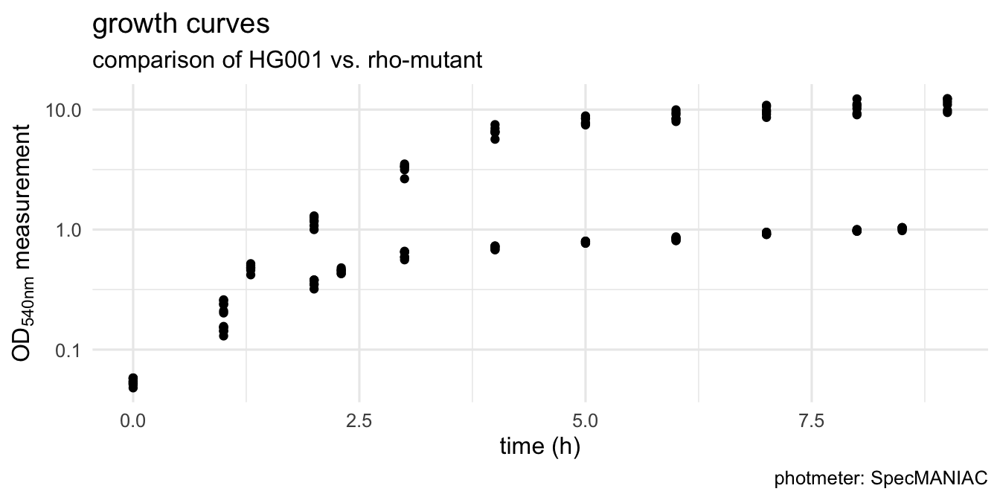
adding color
R can handle several different color inputs like RGB (e.g. rgb(red, green, blue,max=255)), hex color codes (e.g. #63cbd3) or color names (e.g. steelblue1).
a small list of possible color names and color palettes with base R (grDevices) and R color brewer (package):
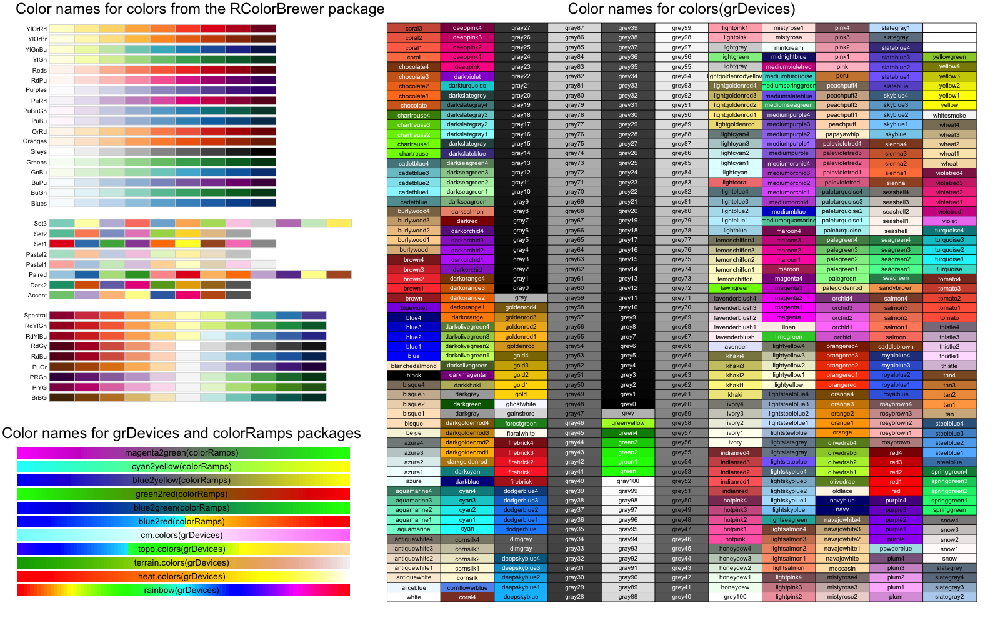
view larger or download: R color names#to color for strain we must define color aesthetics
ggplot(data = growth_tibble,mapping=aes(x = `Zeit (h)`,y = OD,color=strain))+ #add strain to color
geom_point()+
scale_y_log10()+
theme_minimal(base_size = 12)+
labs(title = "growth curves",
subtitle = "comparison of HG001 vs. rho-mutant",
caption = "photmeter: SpecMANIAC",
y = expression(OD["540nm"]~"measurement"),
x = "time (h)") 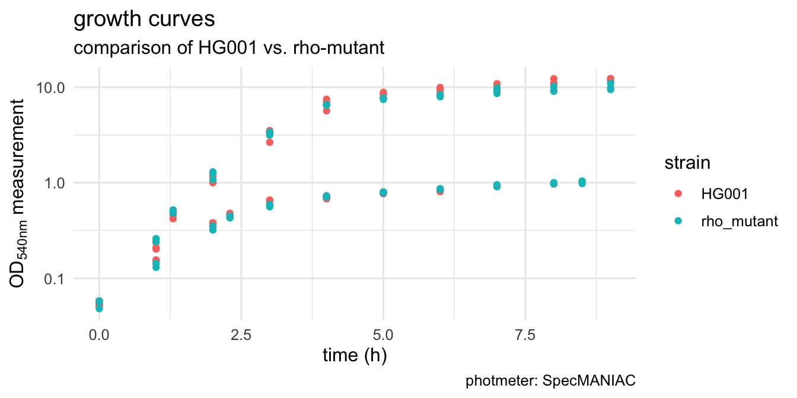
adding color (advanced)
We need tidyr and unite() function.
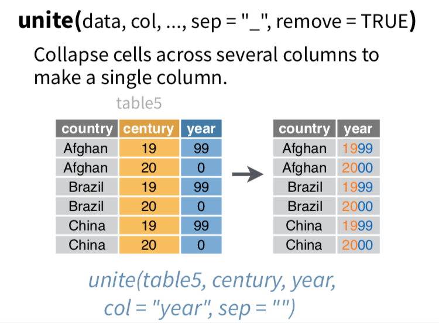
#if we want to color for strain and Media the save way is to generate a new column with the combination
growth_tibble <- growth_tibble %>% unite(media,strain,col="media_strain",sep = "_",remove = F)
growth_tibble## # A tibble: 132 x 6
## `Zeit (h)` replicates OD media_strain media strain
## <dbl> <chr> <dbl> <chr> <chr> <chr>
## 1 0 BR1 0.055 RPMI_HG001 RPMI HG001
## 2 1 BR1 0.156 RPMI_HG001 RPMI HG001
## 3 2 BR1 0.38 RPMI_HG001 RPMI HG001
## 4 2.3 BR1 0.48 RPMI_HG001 RPMI HG001
## 5 3 BR1 0.66 RPMI_HG001 RPMI HG001
## 6 4 BR1 0.73 RPMI_HG001 RPMI HG001
## 7 5 BR1 0.8 RPMI_HG001 RPMI HG001
## 8 6 BR1 0.84 RPMI_HG001 RPMI HG001
## 9 7 BR1 0.91 RPMI_HG001 RPMI HG001
## 10 8 BR1 0.98 RPMI_HG001 RPMI HG001
## # … with 122 more rows#do color for media_strain column
ggplot(data = growth_tibble,mapping=aes(x = `Zeit (h)`,y = OD,color=media_strain))+ #add media_strain to color
geom_point()+
scale_y_log10()+
theme_minimal(base_size = 12)+
labs(title = "growth curves",
subtitle = "comparison of HG001 vs. rho-mutant",
caption = "photmeter: SpecMANIAC",
y = expression(OD["540nm"]~"measurement"),
x = "time (h)") 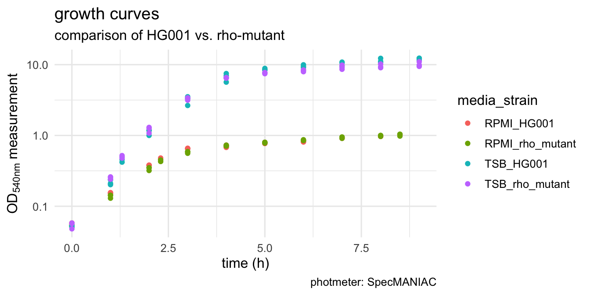
adding shapes
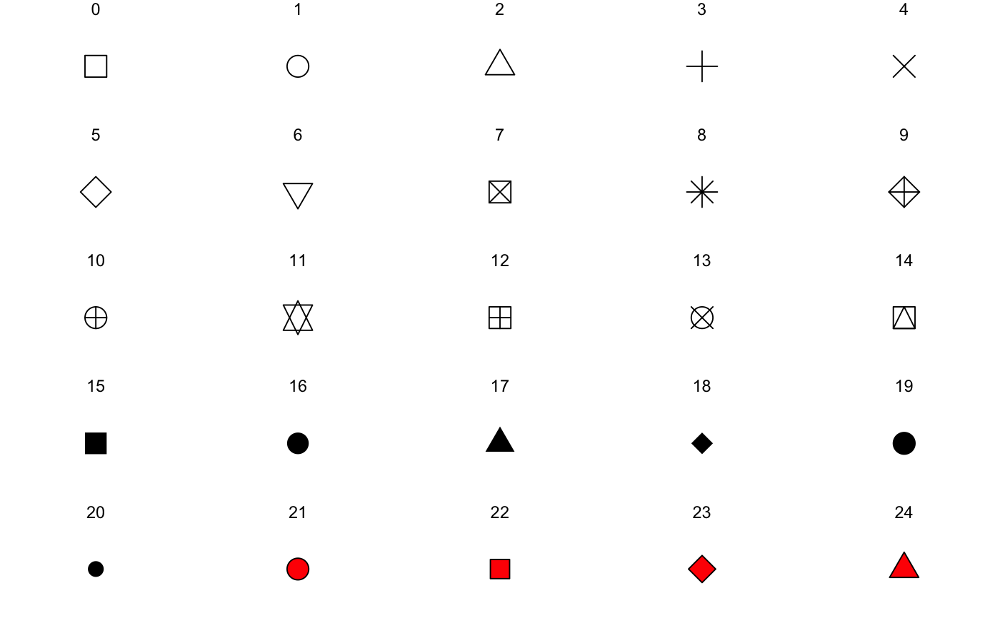
#add a different shape for replicates
ggplot(data = growth_tibble,mapping=aes(x = `Zeit (h)`,y = OD,color=media_strain,shape=replicates))+ #add shape for replicates
geom_point()+
scale_shape_manual(values = c(BR1=6,BR2=18,BR3=24))+ #adding manual shapes
scale_y_log10()+
theme_minimal(base_size = 12)+
labs(title = "growth curves",
subtitle = "comparison of HG001 vs. rho-mutant",
caption = "photmeter: SpecMANIAC",
y = expression(OD["540nm"]~"measurement"),
x = "time (h)") 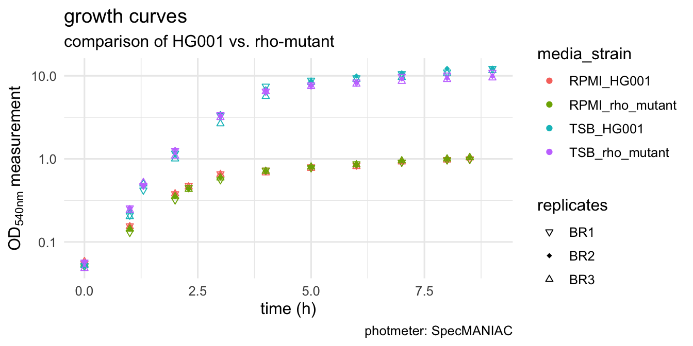
adding lines
#add lines
ggplot(data = growth_tibble,mapping=aes(x = `Zeit (h)`,y = OD,color=media_strain,shape=replicates))+
geom_point()+
geom_line()+ #add line layer
scale_y_log10()+
theme_minimal(base_size = 12)+
labs(title = "growth curves",
subtitle = "comparison of HG001 vs. rho-mutant",
caption = "photmeter: SpecMANIAC",
y = expression(OD["540nm"]~"measurement"),
x = "time (h)") 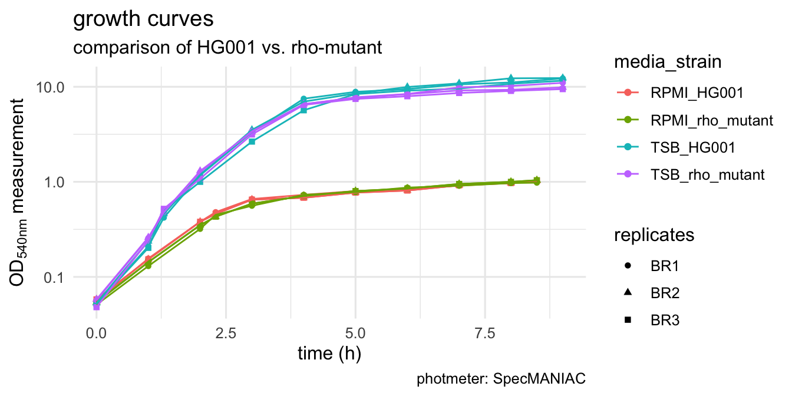
setup manual colors
#and finally we want to have different colors
#generate color vector with names = entries of media_strain
my_colors <- c(TSB_HG001="steelblue1",
RPMI_HG001="steelblue3",
RPMI_rho_mutant="orangered3",
TSB_rho_mutant="orangered1")
ggplot(data = growth_tibble,mapping=aes(x = `Zeit (h)`,y = OD,color=media_strain,shape=replicates))+
geom_point()+
geom_line()+
scale_y_log10()+
scale_color_manual(values = my_colors)+ #add our manual colors
theme_minimal(base_size = 12)+
labs(title = "growth curves",
subtitle = "comparison of HG001 vs. rho-mutant",
caption = "photmeter: SpecMANIAC",
y = expression(OD["540nm"]~"measurement"),
x = "time (h)") 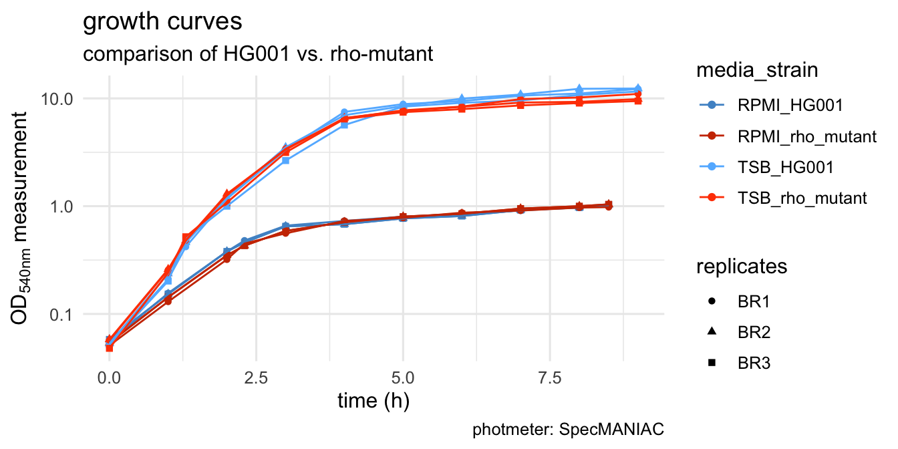
faceting plots
#since TSB and RPMI differs a lot from final OD we would like to have them split up
ggplot(data = growth_tibble,mapping=aes(x = `Zeit (h)`,y = OD,color=media_strain,shape=replicates))+
geom_point()+
geom_line()+
scale_y_log10()+
scale_color_manual(values = my_colors)+
facet_wrap(~media)+ #add a facet wrap and split them by "media"
theme_minimal(base_size = 12)+
labs(title = "growth curves",
subtitle = "comparison of HG001 vs. rho-mutant",
caption = "photmeter: SpecMANIAC",
y = expression(OD["540nm"]~"measurement"),
x = "time (h)") 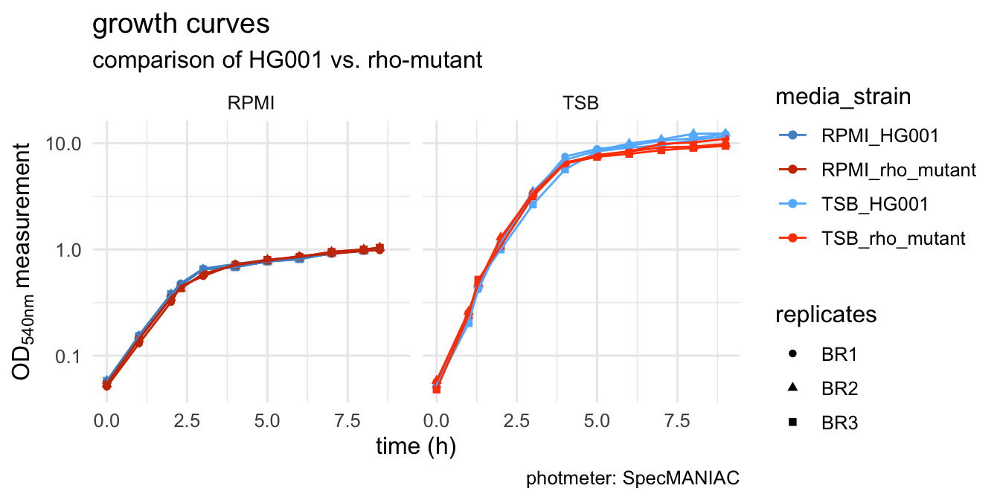
faceting plots: use free scales
# by default ggplot2 uses same scales for every plot;
# now: do not use the same scale when using facet wrap
ggplot(data = growth_tibble,mapping=aes(x = `Zeit (h)`,y = OD,color=media_strain,shape=replicates))+
geom_point()+
geom_line()+
scale_y_log10()+
scale_color_manual(values = my_colors)+
facet_wrap(~media, scales="free")+ #scaling is performed individually and NOT globally
theme_minimal(base_size = 12)+
labs(title = "growth curves",
subtitle = "comparison of HG001 vs. rho-mutant",
caption = "photmeter: SpecMANIAC",
y = expression(OD["540nm"]~"measurement"),
x = "time (h)") 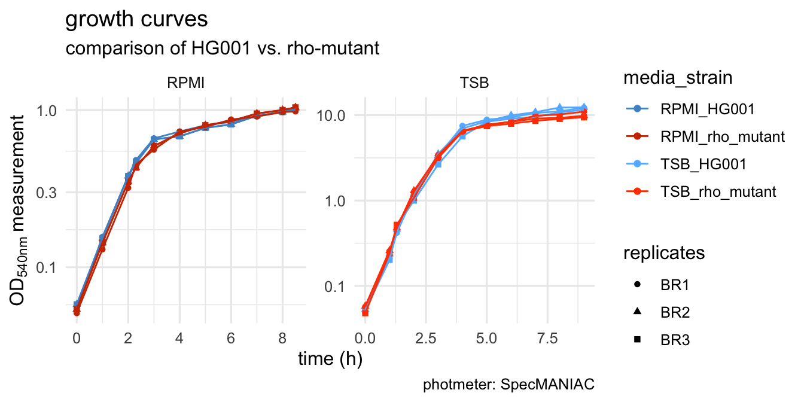
faceting plots: using two variables
# facet wrap by strain and media
ggplot(data = growth_tibble,mapping=aes(x = `Zeit (h)`,y = OD,color=media_strain,shape=replicates))+
geom_point()+
geom_line()+
scale_y_log10()+
scale_color_manual(values = my_colors)+
facet_wrap(~strain+media, scales="free")+ #add strain to facet wrap
theme_minimal(base_size = 12)+
labs(title = "growth curves",
subtitle = "comparison of HG001 vs. rho-mutant",
caption = "photmeter: SpecMANIAC",
y = expression(OD["540nm"]~"measurement"),
x = "time (h)") 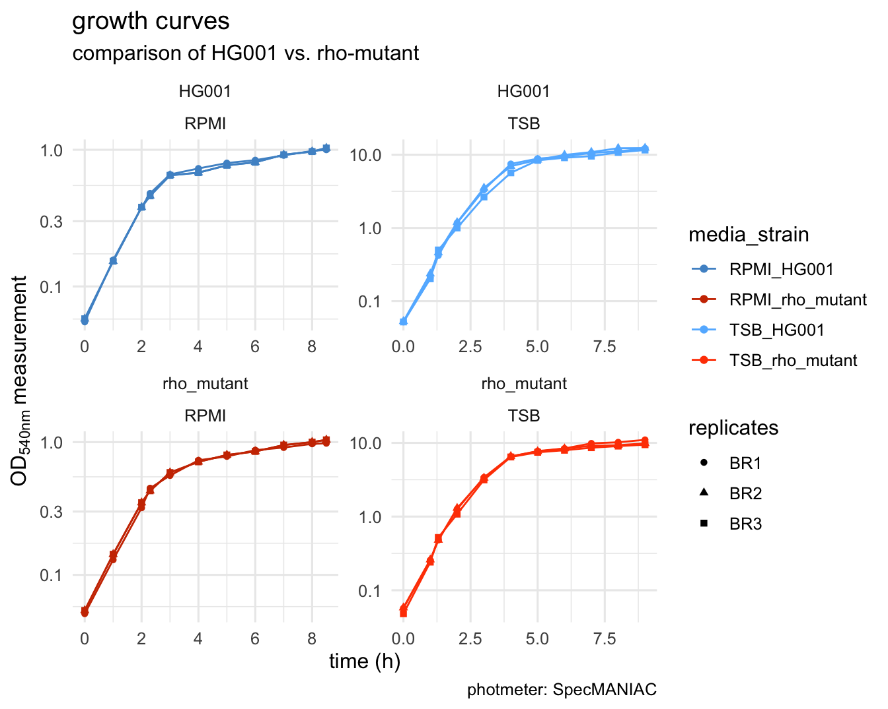
adding manual breaks to axis
# adding costum breaks
ggplot(data = growth_tibble,mapping=aes(x = `Zeit (h)`,y = OD,color=media_strain,shape=replicates))+
geom_point()+
geom_line()+
scale_y_log10(breaks = c(0.05,0.1,0.25,0.5,1,seq(2,10,by=5)))+ #add costum breaks
scale_color_manual(values = my_colors)+
facet_wrap(~strain+media, scales="free")+
theme_minimal(base_size = 12)+
labs(title = "growth curves",
subtitle = "comparison of HG001 vs. rho-mutant",
caption = "photmeter: SpecMANIAC",
y = expression(OD["540nm"]~"measurement"),
x = "time (h)") 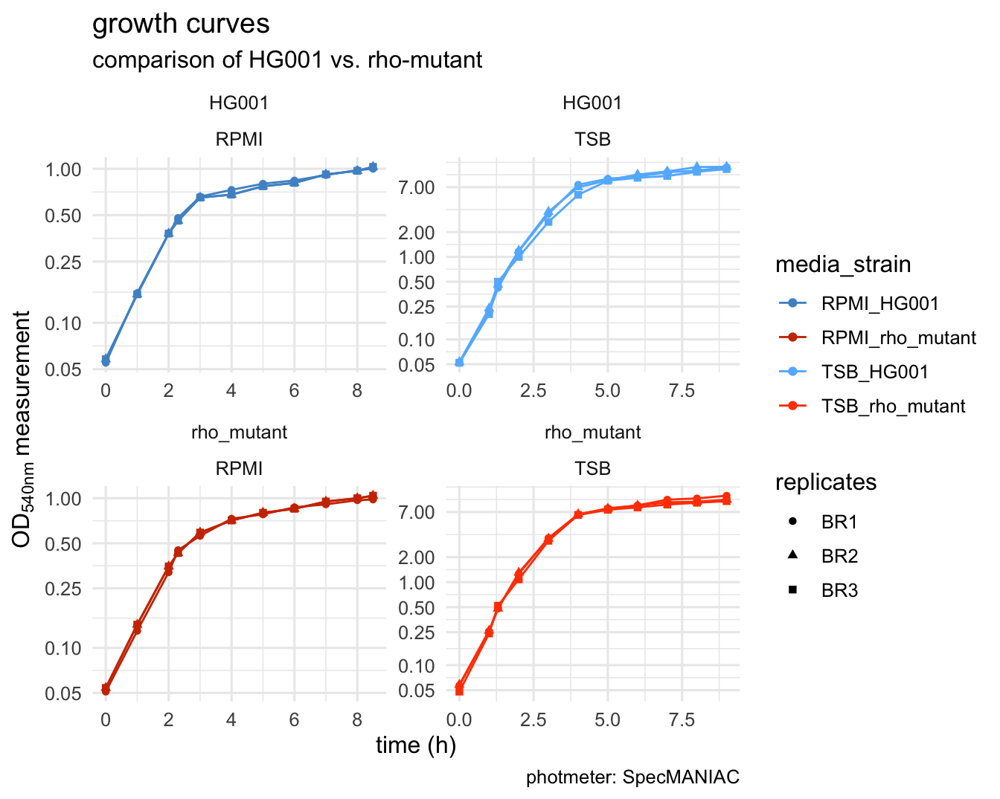
adding transparancy and size to points and lines
# adding transparent lines and increase size of points and lines
ggplot(data = growth_tibble,mapping=aes(x = `Zeit (h)`,y = OD,color=media_strain,shape=replicates))+
geom_point(size=3,alpha=0.5)+ #adding transprancy and size
geom_line(alpha=0.5,size=1.5)+ #adding transprancy and size
scale_y_log10(breaks = c(0.05,0.1,0.25,0.5,1,seq(2,10,by=5)))+
scale_color_manual(values = my_colors)+
facet_wrap(~strain+media, scales="free")+
theme_minimal(base_size = 12)+
labs(title = "growth curves",
subtitle = "comparison of HG001 vs. rho-mutant",
caption = "photmeter: SpecMANIAC",
y = expression(OD["540nm"]~"measurement"),
x = "time (h)") 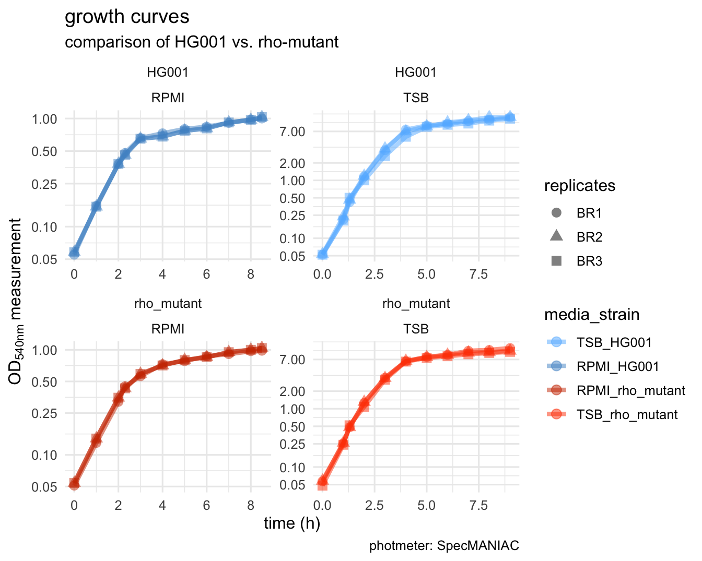
aggregate data and plot aggregated data with error bars
To summarize the data we will need group_by() and summarise function from dplyr package and mean() and sd() function from R base.

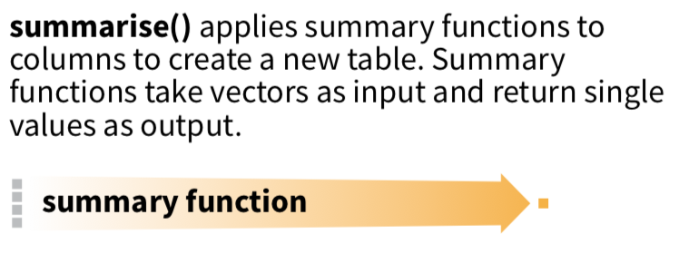
#if you want just a bioreplicate aggregates plot with mean and SD we first have to summarize our tibble by using the mean and SD over bioreplicates
growth_tibble_summary <- growth_tibble %>%
group_by(`Zeit (h)`,media,strain) %>%
summarise(mean_OD=mean(OD,na.rm=T),SD_OD=sd(OD,na.rm=T)) %>%
ungroup() %>%
unite(media,strain,col="media_strain",sep = "_",remove = F)
growth_tibble_summary## # A tibble: 44 x 6
## `Zeit (h)` media_strain media strain mean_OD SD_OD
## <dbl> <chr> <chr> <chr> <dbl> <dbl>
## 1 0 RPMI_HG001 RPMI HG001 0.057 0.00173
## 2 0 RPMI_rho_mutant RPMI rho_mutant 0.053 0.00173
## 3 0 TSB_HG001 TSB HG001 0.0523 0.000577
## 4 0 TSB_rho_mutant TSB rho_mutant 0.0543 0.00551
## 5 1 RPMI_HG001 RPMI HG001 0.154 0.00173
## 6 1 RPMI_rho_mutant RPMI rho_mutant 0.139 0.00751
## 7 1 TSB_HG001 TSB HG001 0.216 0.0183
## 8 1 TSB_rho_mutant TSB rho_mutant 0.252 0.0100
## 9 1.3 TSB_HG001 TSB HG001 0.46 0.04
## 10 1.3 TSB_rho_mutant TSB rho_mutant 0.493 0.0231
## # … with 34 more rowsggplot(data = growth_tibble_summary,mapping=aes(x = `Zeit (h)`,y = mean_OD,color=media_strain))+
geom_line()+
geom_point(alpha=0.5)+
geom_errorbar(aes(ymin = mean_OD-SD_OD, ymax = mean_OD+SD_OD))+
scale_y_log10(breaks = c(0.05,0.1,0.25,0.5,1,seq(2,10,by=5)))+ #add costum breaks
scale_color_manual(values = my_colors)+
facet_wrap(~media, scales="free")+
theme_minimal(base_size = 12)+
labs(title = "growth curves",
subtitle = "comparison of HG001 vs. rho-mutant",
caption = "photmeter: SpecMANIAC",
y = expression(OD["540nm"]~"measurement"),
x = "time (h)") 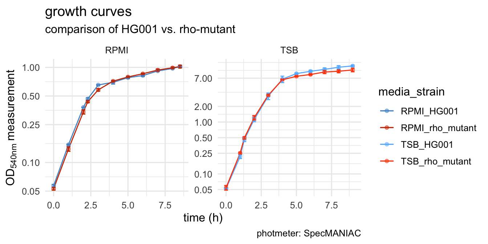
generate and save a plot
#for saving a plot assing the plot to a variable and save it using ggsave()
final_plot <- ggplot(data = growth_tibble_summary,mapping=aes(x = `Zeit (h)`,y = mean_OD,color=media_strain))+
geom_line()+
geom_point(alpha=0.5)+
geom_errorbar(aes(ymin = mean_OD-SD_OD, ymax = mean_OD+SD_OD))+
scale_y_log10(breaks = c(0.05,0.1,0.25,0.5,1,seq(2,10,by=5)))+ #add costum breaks
scale_color_manual(values = my_colors)+
facet_wrap(~media, scales="free")+
theme_minimal(base_size = 12)+
labs(title = "growth curves",
subtitle = "comparison of HG001 vs. rho-mutant",
caption = "photmeter: SpecMANIAC",
y = expression(OD["540nm"]~"measurement"),
x = "time (h)")
#ggsave(filename = "my_plot.pdf",plot = final_plot,device = "pdf",width = 12,height = 5)generate interactive plot
You can just simply use the ggplotly() function from the plolty package to make a ggplot graph interactive. There are some limitations in the plotly plot so it might be that not all option that you set from ggplot were not plotted in plolty plot. You can also manipulate the hover box of the plot and add additional content, which might be benificial for gen or protein wise plots over experiments.
#make plot interactive very easily with plotly
suppressMessages(library(plotly))
ggplotly(final_plot)add text annotation to plot
Our growth curve plot is already nice and ready for publication, but one important thing is missing, which is mostly added by hand. The sampling time points. This manuall addition is not very convenient and the information for the real final plot in the manuscript is scatter around in R and e.g. Powerpoint.
In ggplot2 we can easily add annotations to the plot using geom_text() or geom_label() function. (geom_text adds text directly to the plot. geom_label draws a rectangle behind the text, making it easier to read)
But first we need to define the position of the text label.
#we need to define the position of the text label
#therefore we will compute the max (label above data points) OD per time point and per media since comparing the growth of strains by eye shows no differences in growth.
final_plot_label_data <- growth_tibble_summary %>% group_by(media,`Zeit (h)`) %>% dplyr::summarise(OD_label=max(mean_OD)+max(SD_OD))
#we have different time of the sampling per media lets generate a tibble with the data time points
sampling_times<-tibble(`Zeit (h)`=c(c(2,3,4,8),
c(1.3,3,4,8)
),
sampling_time_point=c(c("exp.","trans.","early stat.","late stat."),
c("exp.","trans.","early stat.","late stat.")
),
media=c(rep("RPMI",4),
rep("TSB",4)
)
)
sampling_times## # A tibble: 8 x 3
## `Zeit (h)` sampling_time_point media
## <dbl> <chr> <chr>
## 1 2 exp. RPMI
## 2 3 trans. RPMI
## 3 4 early stat. RPMI
## 4 8 late stat. RPMI
## 5 1.3 exp. TSB
## 6 3 trans. TSB
## 7 4 early stat. TSB
## 8 8 late stat. TSBWe use left_join() function from dplyr package to combine tables.
Mutating joins combine variables from the two data.frames:
- inner_join()
- return all rows from x where there are matching values in y, and all columns from x and y. If there are multiple matches between x and y, all combination of the matches are returned.
- left_join()
- return all rows from x, and all columns from x and y. Rows in x with no match in y will have NA values in the new columns. If there are multiple matches between x and y, all combinations of the matches are returned.
- right_join()
- return all rows from y, and all columns from x and y. Rows in y with no match in x will have NA values in the new columns. If there are multiple matches between x and y, all combinations of the matches are returned.
- full_join()
- return all rows and all columns from both x and y. Where there are not matching values, returns NA for the one missing.
Filtering joins keep cases from the left-hand data.frame:
- semi_join()
- return all rows from x where there are matching values in y, keeping just columns from x.
- A semi join differs from an inner join because an inner join will return one row of x for each matching row of y, where a semi join will never duplicate rows of x.
- anti_join()
- return all rows from x where there are not matching values in y, keeping just columns from x.


#now we will combine final_plot_label_data and sampling_times by media and `Zeit (h)` using dplyr::left_join()
final_plot_label_data<-left_join(x = final_plot_label_data,y = sampling_times,by = c("Zeit (h)","media"))
final_plot_label_data## # A tibble: 22 x 4
## # Groups: media [2]
## media `Zeit (h)` OD_label sampling_time_point
## <chr> <dbl> <dbl> <chr>
## 1 RPMI 0 0.0587 <NA>
## 2 RPMI 1 0.162 <NA>
## 3 RPMI 2 0.397 exp.
## 4 RPMI 2.3 0.478 <NA>
## 5 RPMI 3 0.671 trans.
## 6 RPMI 4 0.746 early stat.
## 7 RPMI 5 0.811 <NA>
## 8 RPMI 6 0.874 <NA>
## 9 RPMI 7 0.960 <NA>
## 10 RPMI 8 1.01 late stat.
## # … with 12 more rows#now we can add out labels to the plot
# the plot is already ready (assigned to final_plot) and you can review the plot using "final_plot"
final_plot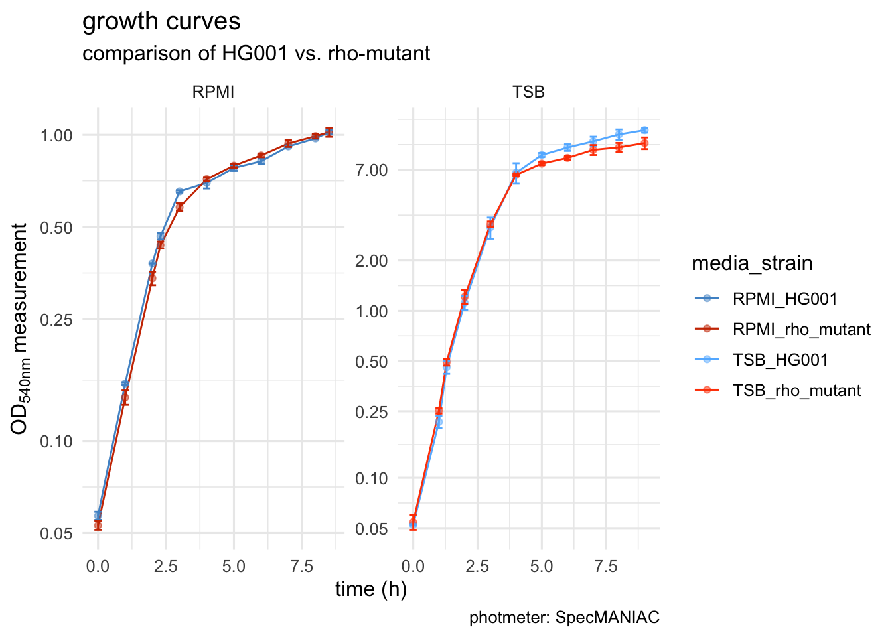
#small hint: since ggplot2 version 3.0 its possible to assign tags to plots
final_plot+labs(tag = "a)")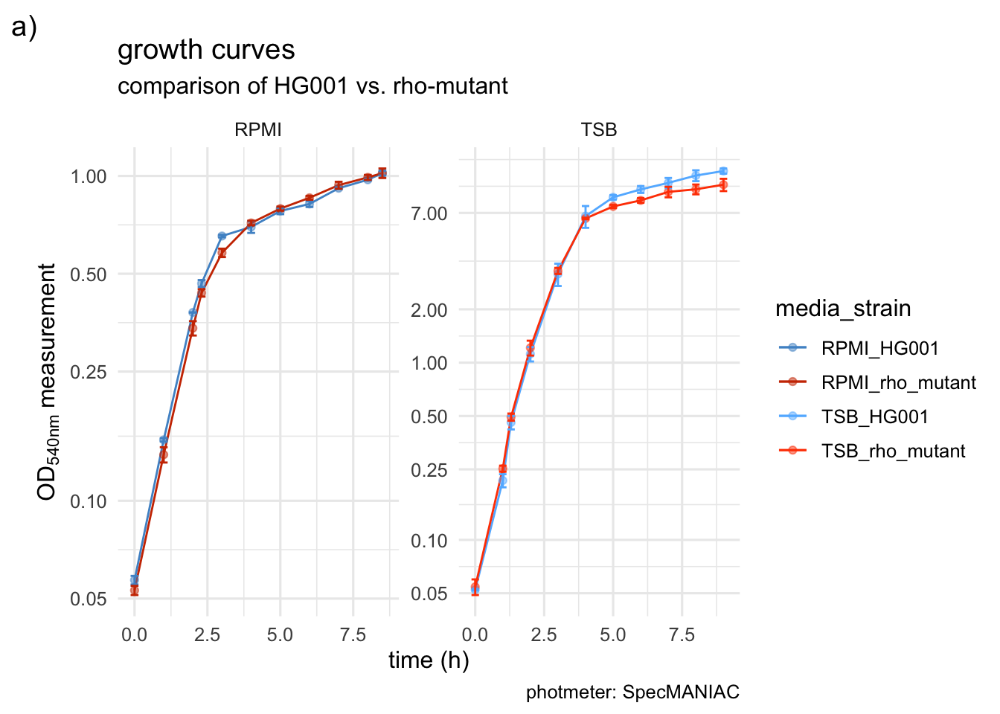
final_plot+
geom_text(data = final_plot_label_data,mapping = aes(x = `Zeit (h)`,y = OD_label,label=sampling_time_point),nudge_y=0.05,inherit.aes = F) #adding text label## Warning: Removed 14 rows containing missing values (geom_text).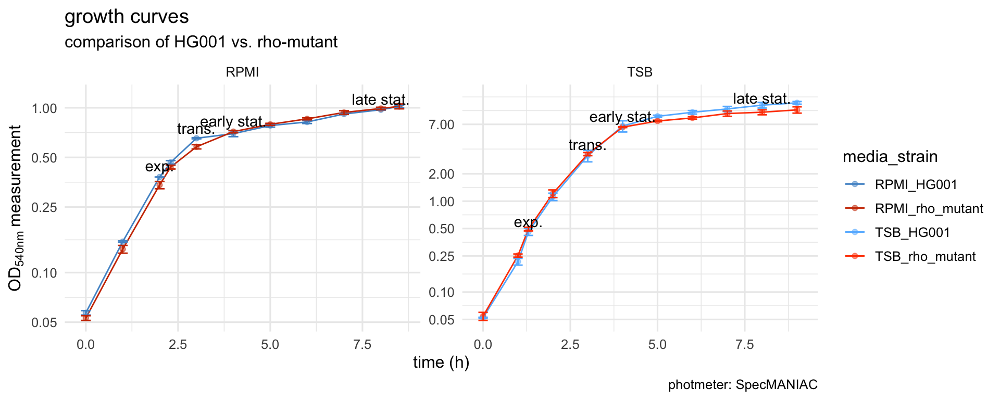
#nudge_y .... vertical adjustment to nudge labels
#inherit.aes .... If FALSE, overrides the default aesthetics, rather than combining with them. This is most useful for helper functions that define both
#data and aesthetics and shouldn't inherit behaviour from the default plot specification, e.g. borders().final_plot+
geom_label(data = final_plot_label_data,mapping = aes(x = `Zeit (h)`,y = OD_label,label=sampling_time_point),nudge_y=0.05,inherit.aes = F,alpha=0.5) #adding label## Warning: Removed 14 rows containing missing values (geom_label).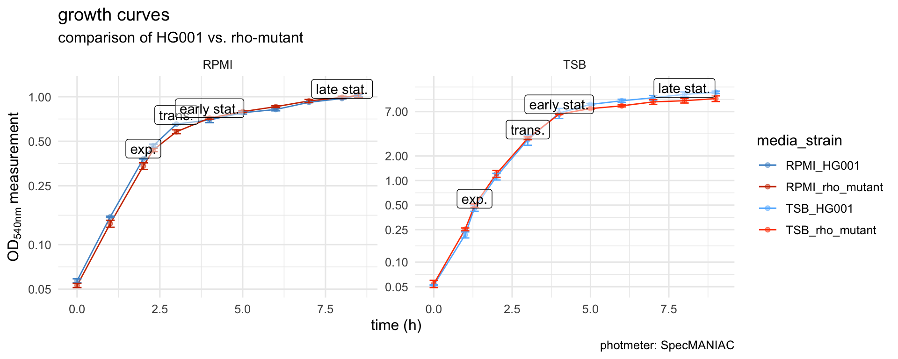
Test growth data - statistical significant differences
statistical testing
To test for statistical significant differences we use the ggpubr (publication ready plots) package (ggpubr package) which is extremly powerful and easy to use. (online examples - ggpubr)
suppressMessages(library(ggpubr)) #load ggpubr package
#use compare_means() function from ggpubr package
#since ggpubr has problems with " " etc. in column name we rename the time column to "time_in_h"
growth_tibble_col_formatted <- growth_tibble %>% rename(time_in_h = `Zeit (h)`) #rename() function --> rename column header
#check result
growth_tibble_col_formatted## # A tibble: 132 x 6
## time_in_h replicates OD media_strain media strain
## <dbl> <chr> <dbl> <chr> <chr> <chr>
## 1 0 BR1 0.055 RPMI_HG001 RPMI HG001
## 2 1 BR1 0.156 RPMI_HG001 RPMI HG001
## 3 2 BR1 0.38 RPMI_HG001 RPMI HG001
## 4 2.3 BR1 0.48 RPMI_HG001 RPMI HG001
## 5 3 BR1 0.66 RPMI_HG001 RPMI HG001
## 6 4 BR1 0.73 RPMI_HG001 RPMI HG001
## 7 5 BR1 0.8 RPMI_HG001 RPMI HG001
## 8 6 BR1 0.84 RPMI_HG001 RPMI HG001
## 9 7 BR1 0.91 RPMI_HG001 RPMI HG001
## 10 8 BR1 0.98 RPMI_HG001 RPMI HG001
## # … with 122 more rows#now compare means with a t-test
growth_tibble_stats <- compare_means(data = growth_tibble_col_formatted,formula = OD ~ media_strain,method = "t.test",p.adjust.method = "BH",group.by = "time_in_h")
#formula .... formula of the form x ~ group where x is a numeric variable giving the data values and group is a factor with one or multiple levels giving the corresponding groups. For example, formula = TP53 ~ cancer_group.
#look at stats
growth_tibble_stats## # A tibble: 58 x 9
## time_in_h .y. group1 group2 p p.adj p.format p.signif method
## <dbl> <chr> <chr> <chr> <dbl> <dbl> <chr> <chr> <chr>
## 1 0 OD RPMI_HG001 RPMI_rho_… 0.0474 0.067 0.04742 * T-test
## 2 0 OD RPMI_HG001 TSB_HG001 0.0326 0.051 0.03257 * T-test
## 3 0 OD RPMI_HG001 TSB_rho_m… 0.495 0.55 0.49545 ns T-test
## 4 0 OD RPMI_rho_… TSB_HG001 0.581 0.64 0.58131 ns T-test
## 5 0 OD RPMI_rho_… TSB_rho_m… 0.722 0.75 0.72212 ns T-test
## 6 0 OD TSB_HG001 TSB_rho_m… 0.594 0.64 0.59428 ns T-test
## 7 1 OD RPMI_HG001 RPMI_rho_… 0.0647 0.085 0.06473 ns T-test
## 8 1 OD RPMI_HG001 TSB_HG001 0.0268 0.044 0.02677 * T-test
## 9 1 OD RPMI_HG001 TSB_rho_m… 0.00274 0.0072 0.00274 ** T-test
## 10 1 OD RPMI_rho_… TSB_HG001 0.00956 0.018 0.00956 ** T-test
## # … with 48 more rowsThe test was performed using media_strain as group variable for the test and the test was grouped by the time_in_h variable. This results also in comparisons, which are not necessary meaningful. Since the growth in different media is obviously different and testing for that is not very meaningful. Therefore we will split our data into RPMI and TSB data and test them seperately. We can now use the filter() function from the dplyr package to filter the compare_means result for only significant changed ones.
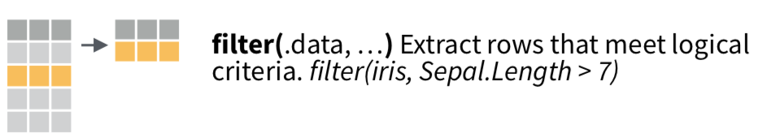
{width=“400px”,align=“center”}#test growth in RPMI
growth_tibble_stats_RPMI <- growth_tibble_col_formatted %>%
filter(media=="RPMI") %>%
compare_means(formula = OD ~ strain,method = "t.test",p.adjust.method = "BH",group.by = "time_in_h")
growth_tibble_stats_RPMI## # A tibble: 11 x 9
## time_in_h .y. group1 group2 p p.adj p.format p.signif method
## <dbl> <chr> <chr> <chr> <dbl> <dbl> <chr> <chr> <chr>
## 1 0 OD HG001 rho_mutant 0.0474 0.12 0.047 * T-test
## 2 1 OD HG001 rho_mutant 0.0647 0.12 0.065 ns T-test
## 3 2 OD HG001 rho_mutant 0.0572 0.12 0.057 ns T-test
## 4 2.3 OD HG001 rho_mutant 0.0335 0.12 0.033 * T-test
## 5 3 OD HG001 rho_mutant 0.0115 0.12 0.012 * T-test
## 6 4 OD HG001 rho_mutant 0.357 0.39 0.357 ns T-test
## 7 5 OD HG001 rho_mutant 0.338 0.39 0.338 ns T-test
## 8 6 OD HG001 rho_mutant 0.0455 0.12 0.046 * T-test
## 9 7 OD HG001 rho_mutant 0.270 0.37 0.270 ns T-test
## 10 8 OD HG001 rho_mutant 0.232 0.36 0.232 ns T-test
## 11 8.5 OD HG001 rho_mutant 1 1 1.000 ns T-test#test growth in TSB
growth_tibble_stats_TSB <- growth_tibble_col_formatted %>%
filter(media=="TSB") %>%
compare_means(formula = OD ~ strain,method = "t.test",p.adjust.method = "BH",group.by = "time_in_h")
growth_tibble_stats_TSB## # A tibble: 11 x 9
## time_in_h .y. group1 group2 p p.adj p.format p.signif method
## <dbl> <chr> <chr> <chr> <dbl> <dbl> <chr> <chr> <chr>
## 1 0 OD HG001 rho_mutant 0.594 0.73 0.5943 ns T-test
## 2 1 OD HG001 rho_mutant 0.0561 0.12 0.0561 ns T-test
## 3 1.3 OD HG001 rho_mutant 0.295 0.46 0.2949 ns T-test
## 4 2 OD HG001 rho_mutant 0.362 0.5 0.3619 ns T-test
## 5 3 OD HG001 rho_mutant 0.668 0.74 0.6682 ns T-test
## 6 4 OD HG001 rho_mutant 0.753 0.75 0.7532 ns T-test
## 7 5 OD HG001 rho_mutant 0.00753 0.083 0.0075 ** T-test
## 8 6 OD HG001 rho_mutant 0.0185 0.1 0.0185 * T-test
## 9 7 OD HG001 rho_mutant 0.0998 0.18 0.0998 ns T-test
## 10 8 OD HG001 rho_mutant 0.0362 0.1 0.0362 * T-test
## 11 9 OD HG001 rho_mutant 0.0332 0.1 0.0332 * T-testAdd significance indication to plot
And finally lets highlight significant results in our plot with "*".
Although the differences are very small due to only very low variations over biological replicates these minor differences are significant. But the fold-change is very very small.
suppressMessages(library(gtools)) #load gtools packge for stars.pval() function
suppressMessages(library(ggrepel)) #load ggrepel package for non-overlapping text and labels
#add media column
growth_tibble_stats_TSB$media <- "TSB"
growth_tibble_stats_RPMI$media <- "RPMI"
#binding both tibbles together via rows
growth_tibble_stats_final <- bind_rows(growth_tibble_stats_TSB,growth_tibble_stats_RPMI)
#add OD max values per time
growth_tibble_stats_final <- left_join(growth_tibble_stats_final,final_plot_label_data %>% rename(time_in_h = `Zeit (h)`),by = c("media","time_in_h"))
#create new column and assign "stars" to adjusted p-value
growth_tibble_stats_final$p.adj.signif<-stars.pval(growth_tibble_stats_final$p.adj)
growth_tibble_stats_final## # A tibble: 22 x 13
## time_in_h .y. group1 group2 p p.adj p.format p.signif method media
## <dbl> <chr> <chr> <chr> <dbl> <dbl> <chr> <chr> <chr> <chr>
## 1 0 OD HG001 rho_m… 0.594 0.73 0.5943 ns T-test TSB
## 2 1 OD HG001 rho_m… 0.0561 0.12 0.0561 ns T-test TSB
## 3 1.3 OD HG001 rho_m… 0.295 0.46 0.2949 ns T-test TSB
## 4 2 OD HG001 rho_m… 0.362 0.5 0.3619 ns T-test TSB
## 5 3 OD HG001 rho_m… 0.668 0.74 0.6682 ns T-test TSB
## 6 4 OD HG001 rho_m… 0.753 0.75 0.7532 ns T-test TSB
## 7 5 OD HG001 rho_m… 0.00753 0.083 0.0075 ** T-test TSB
## 8 6 OD HG001 rho_m… 0.0185 0.1 0.0185 * T-test TSB
## 9 7 OD HG001 rho_m… 0.0998 0.18 0.0998 ns T-test TSB
## 10 8 OD HG001 rho_m… 0.0362 0.1 0.0362 * T-test TSB
## # … with 12 more rows, and 3 more variables: OD_label <dbl>,
## # sampling_time_point <chr>, p.adj.signif <chr>#you can use write_delim() function to write statistics on hard drive as extra file
# write_delim(x = growth_tibble_stats_final,path = "growth_curve_statistics.txt",delim = "\t",col_names = T)
#signs with adjusted p-value
final_plot+
geom_label(data = final_plot_label_data,mapping = aes(x = `Zeit (h)`,y = OD_label,label=sampling_time_point),nudge_y=0.05,inherit.aes = F,alpha=0.5)+
geom_text(data = growth_tibble_stats_final,mapping = aes(x = time_in_h,y = OD_label,label=p.adj.signif),nudge_y=-0.08,inherit.aes = F,size=10)+
labs(caption="adjusted p-value")## Warning: Removed 14 rows containing missing values (geom_label).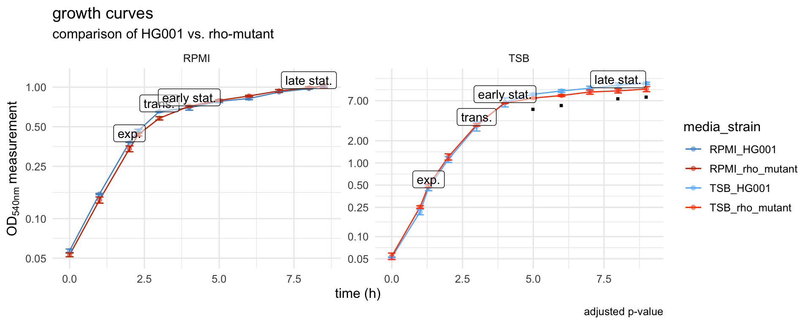
#signs with un-adjusted p-value
final_plot+
geom_label(data = final_plot_label_data,mapping = aes(x = `Zeit (h)`,y = OD_label,label=sampling_time_point),nudge_y=0.05,inherit.aes = F,alpha=0.5)+
geom_text_repel(data = growth_tibble_stats_final,mapping = aes(x = time_in_h,y = OD_label,label=p.signif),nudge_y=-0.1,inherit.aes = F,size=4)+ #geom_text_repel from ggrepel package
labs(caption="un-adjusted p-value")## Warning: Removed 14 rows containing missing values (geom_label).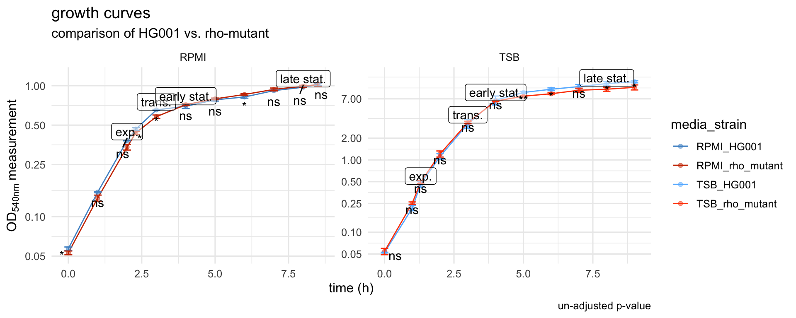